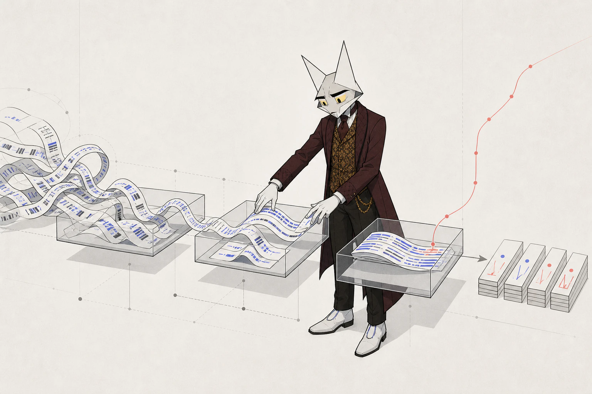

1 · The five layers

2 · Raw: the moat mechanism
Every Plaid response lands verbatim in object storage, keyed by borrower, Item, endpoint and date, with statement PDFs and their hashes alongside. The cursor journal (cursor before and after, page, counts, pulled-at) is the replayable source of truth. Plaid's history window caps at 730 days, so the journal is what turns a two-year window into an ever-growing archive: from month 25, this layer holds history no competitor can re-pull with any consent. Object Lock keeps it append-only; access tokens never enter the warehouse, they live vaulted and are referenced by opaque ids; removed transactions are tombstoned, never deleted, so the system can always reconstruct what it believed on any date. That last property is what makes a disputed attestation defensible.
3 · Normalized: where the truth gets made
The canonical schema is ordinary: borrower, institution, item, account, transaction, counterparty, balance snapshot, metric run, freshness. Three decisions carry the weight:
- Fix the sign convention once. Plaid's positive means outflow; store a normalized signed amount where positive means inflow and never think about it again.
- The class column carries every metric above it. Every metric depends on classifying each transaction: revenue, intercompany, financing inflow, sweep, refund, opex, payroll, debt service, tax, distribution, fee, NSF fee. Track the class source (rule, model, vendor, manual) and audit every manual override.
- Counterparty resolution is borrower-scoped first. Cross-borrower canonicalization comes later and is itself a platform asset: the same "customer" paying three borrowers is visible only from the platform seat.
4 · Derived: the metric catalog
Computed per run over a window W, default the trailing 12 complete months, on posted, non-pending, non-removed transactions in operating accounts. Every bundle embeds its window, months used, coverage ratio and staleness; a metric without freshness metadata is treated as stale.
| Metric | Definition | Edge case that decides its honesty |
|---|---|---|
| TTM inflows | Sum of revenue-classified inflows over the last 12 complete months | Report the gross figure and the exclusion delta too; a large delta between gross and revenue-classified inflows is itself a fraud signal |
| Average monthly operating cash flow | Mean of monthly net cash flow (revenue inflows minus operating outflows) | Months with coverage below 95% are excluded and disclosed |
| Minimum cash balance | Minimum of daily reconstructed total balance across W | Daily balances are reconstructed backward from snapshot anchors; multi-currency converts at a disclosed basis |
| Liquidity trend | Regression slope of month-end cash over 6 months, divided by average cash | Report with fit quality; a trend without fit is noise |
| Customer concentration | HHI over revenue-classified inflow shares by resolved counterparty | Publish the unresolved share alongside; an HHI over 40% unresolved inflows is meaningless |
| Recurring obligations | Monthly-equivalent sum of detected recurring outflow streams (same counterparty, stable amount, stable period, 3+ hits) | Classify debt service, rent, payroll, subscriptions separately |
| NSF / overdraft frequency | Count of NSF-fee transactions per 12 months, plus days with negative available balance | Category plus name-regex fallback; institutions differ in how fees surface |
| Cash-flow volatility | Coefficient of variation of monthly net cash flow; inflow volatility reported separately | Near-zero means flip the ratio to dollars and flag it |
| Operating-account coverage | Connected revenue-classified inflows divided by borrower-claimed revenue for the same period; target at least 0.85 | The anti-gaming keystone; below target means the dataset measures a fraction of the business |
| Period and freshness | Window bounds, months used, per-item staleness hours, share of days with successful sync | Embedded in every bundle; staleness publishes as a signal, never hides |
Intercompany transfers excluded by offsetting-pair detection and declared affiliate lists, or TTM inflates arbitrarily. Sweep accounts excluded from flows but included in balances. Credit-line draws classed as financing, never revenue; an interest payment with no declared facility is a red flag, and the declared-debt schedule stays borrower-attested because Plaid Liabilities covers only cards, student loans and mortgages, never business facilities. Exchange transfers get their own class: for trading firms, bank-rail "revenue" is meaningless, so ship a liquidity-and-flow bundle instead of pretending. Refunds net against revenue; tax flows class separately.
5 · Analytics access postures
| Posture | How it works | When |
|---|---|---|
| They send code, Wildcat runs it | Analysts submit versioned SQL or Python against the schema spec; Wildcat runs it, reviews outputs, releases only aggregates above disclosure thresholds and within the borrower's consent scope | Now, and at any n below ~20 borrowers. Cheap, auditable, right-sized |
| Scoped warehouse views | Per-analyst accounts with row-level security from consent objects, column masking (no raw descriptors, anonymized counterparty ids), logged query gateway, egress caps | When analysts need iteration speed; beware that timing plus amounts fingerprint counterparties |
| Clean room proper | AWS Clean Rooms or Snowflake DCR, aggregation-only rules, approved query templates, optional differential privacy | Only past ~30 borrowers; small-n aggregates deanonymize and noise destroys utility below that |
Cross-cutting whatever the posture: immutable query audit logs, per-borrower consent scopes enforced in the view layer, and contractual plus technical egress control. Analysts are papered as Permitted Service Providers per the legal page.
6 · Lender distribution and hooks
- Signed JSON bundle per borrower per run: metrics, window, coverage, staleness, code version, input manifest hash, issue and expiry timestamps, signed by Wildcat's org key. The upgrade path is a TEE-held key (AWS Nitro Enclaves carries the mature attestation tooling in 2026; SGX is deprecated on client silicon) with the pinned metric code published: trust Wildcat today, trust the enclave and the code tomorrow. That is Credora's architecture with current parts. official on the TEE facts.
- PDF tear-sheet rendering the same bundle, with the JSON hash printed on it, for credit committees.
- EAS attestations onchain. The Ethereum Attestation Service is production-proven (Coinbase Verifications on Base, 77k-plus verified users). Publish covenant-status tiers or booleans under a Wildcat schema, revocable and expiring, and let V2 hooks consume them: Wildcat's docs already contemplate access policies keyed on "a credential testifying to off-chain circumstances." A market's capacity raise or APR change can require a fresh, unrevoked health attestation. Staleness rules: expiry at issue plus 35 days, degraded flags when coverage drops or an Item stays broken past 7 days, and a lapsed attestation surfacing in the lender UI as its own signal. official on EAS and hooks.
- Privacy gradient. Exact values, bucketed tiers, threshold booleans, and eventually borrower-side zero-knowledge threshold proofs. zkTLS is production-real in 2026 for point-in-time, borrower-present threshold claims (3Jane runs Plaid plus Reclaim in production); it is not yet the tool for bulk longitudinal metrics, which is what the TEE path covers. official
7 · Anti-gaming
Round-tripping
Fake revenue cycled through unconnected affiliates. Detect: inflow spikes from young counterparties, in-out symmetry over days to weeks, revenue without the expense texture real revenue drags along, amount distributions that are too round.
Hidden accounts
The structural weakness of consent-based data: Plaid shows what is linked, not what exists. Counter with the coverage test against claimed revenue, a rep and warranty listing all accounts, and the smoking gun: transfers to unlinked self-owned accounts visible in the connected ones.
Window dressing
Borrowed cash parked over month-end. Counter with daily reconstructed balances, the financing-inflow class, and a hot-money residency flag for balance spikes that live under a week.
Item sabotage
Links that break before bad weeks. Staleness is a published signal, outages correlated with volatility get flagged, and re-linking is a contractual obligation with cure periods, not a favor.
Bank data cannot see exchange balances, prime-broker margin, or offchain derivatives. Those are the exact holes that killed Maple's book in 2022: Orthogonal's hidden FTX exposure was invisible to any bank feed, and Credora's ratings missed Alameda for the same reason. For crypto-native borrowers the bank layer must pair with exchange read-API or custodian attestations, or it monitors the wrong pocket. Say this plainly in lender-facing docs.
8 · Build cost and the buy line
- Team and time. A credible v1 (ingestion, archive, warehouse, metric engine, consent console, tear-sheets, EAS publishing, code-in analytics posture) is 4 to 6 people for 6 to 9 months, roughly 25 to 40 engineer-months. The TEE upgrade adds 2 to 3 months of one infra engineer. estimate
- Infra. The data is small (50 borrowers is low millions of rows): $2k to $6k a month. Plaid fees dominate infra and are themselves small; see commercials.
- The real ongoing cost is Item babysitting. No public breakage benchmark exists; operator lore says 2 to 5% of Items hit login-required per month, better on OAuth majors. Budget a quarter to half an FTE for re-link campaigns, classification-rule upkeep, and monthly metric review. unverified lore
- Buy the commodity middle, own the differentiated edges. Classification and enrichment are purchasable (Heron Data, Ntropy, Ocrolus for statement OCR) and their training data beats a cold start; but they are tuned to US SMB patterns and cannot classify trading-firm flows, which is conveniently the differentiated part. Own the raw archive, the metric definitions, the signing layer, and the anti-gaming logic. Never let a vendor hold the only copy of raw data, and strike vendor clauses claiming ownership of derivatives of Wildcat's data.
9 · Prototype runbook
A two-week spike that retires the biggest unknowns with one real borrower:
- Plaid Trial plan (ten free live Items). Sandbox first, then one consenting friendly borrower.
- Link flow with
transactionsproduct,days_requested: 730, raw descriptors on,assetsin the products array from the start (cleanest), or added later through the documented update-mode consent step. - Ingestion service: exchange, store tokens vaulted, first
/transactions/sync, webhook receiver with JWT verification, cursor journal to append-only storage. - Measure what the research could not: actual history depth returned by the borrower's institutions, business-account indicator population, counterparty confidence on B2B flows, statement availability.
- Classify one quarter by hand with the class taxonomy; compute the ten metrics; check the coverage test against the borrower's claimed revenue.
- Render one tear-sheet and one signed JSON bundle; publish one EAS attestation on a testnet; wire a toy hook that reads it.
- Write down every institution-specific surprise; that list is the real deliverable.
Sources
Design synthesis and its sourced inputs live in research stream F: Credora and RedStone coverage, 3Jane verification, zkTLS and TEE citations, EAS production evidence, clean-room documentation, vendor documentation for Heron, Ntropy and Ocrolus, and Wildcat's own docs for the hooks system.